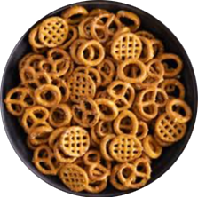

Willkommen!
Hope you like our presentation!
Bread!
German bread is famous for its yummy bread made from rye and whole grains.
It’s a staple in German meals, enjoyed fresh or toasted with butter or cheese.
Sausages!
German sausages are sometimes called Würst.
- Bratwurst - A classic, best grilled.
- Weisswurst - The Bavarian Breakfast.
- Nürnberger Rostbratwurst - Always the star of the grill!
This much variety shows the Germans really love their food!

Pretzels!
Pretzels, or Brezel in German, actually came from Germany! Specifically Bavaria!
Did you know that they came from a frustrated monk making some treats!
The shape came from a person crossing their hands in prayer!
Lebkuchen
These are actually traditional german christmas cookies! üéÑ
They are typically spiced with things like ginger
and Sweetened with things like honey and molasses!
THE END!
Thanks for watching our presentation!